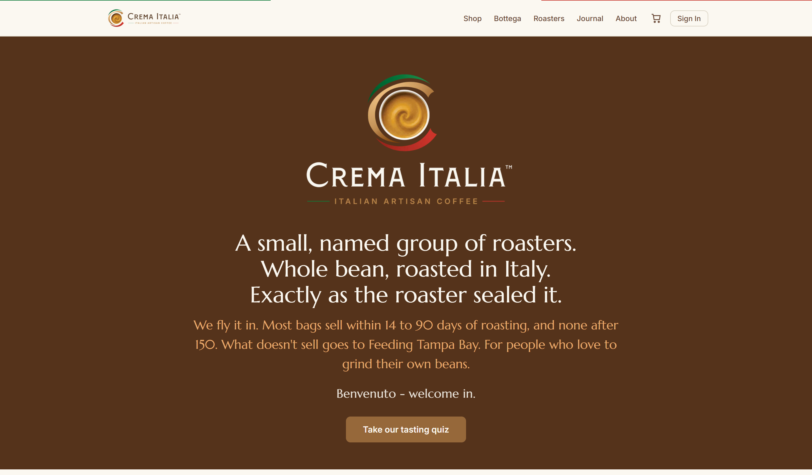
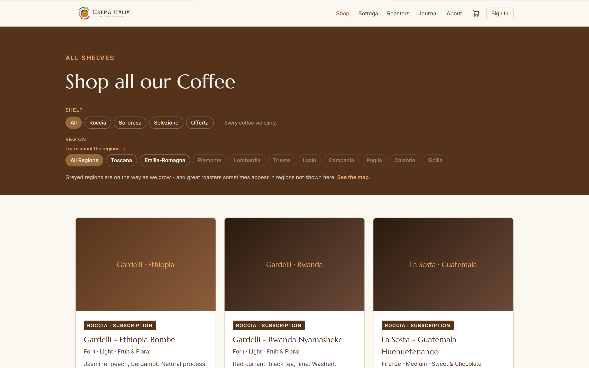
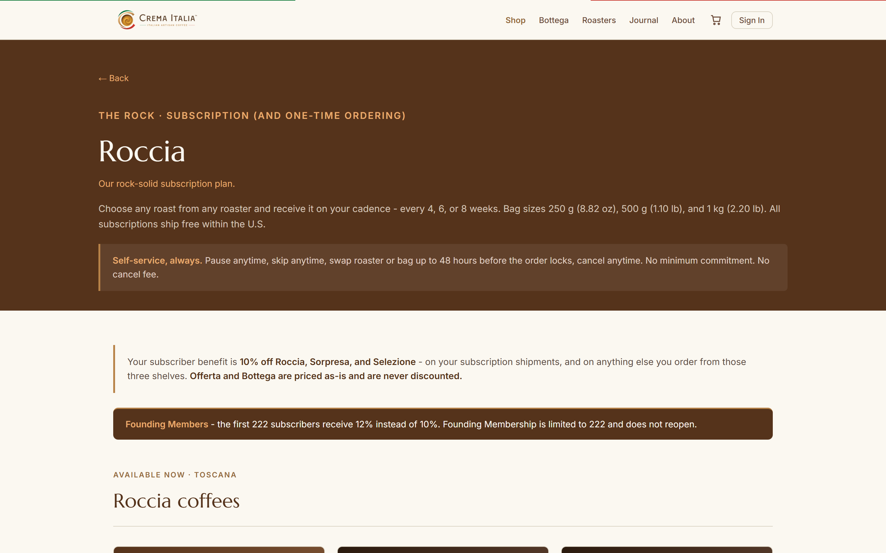
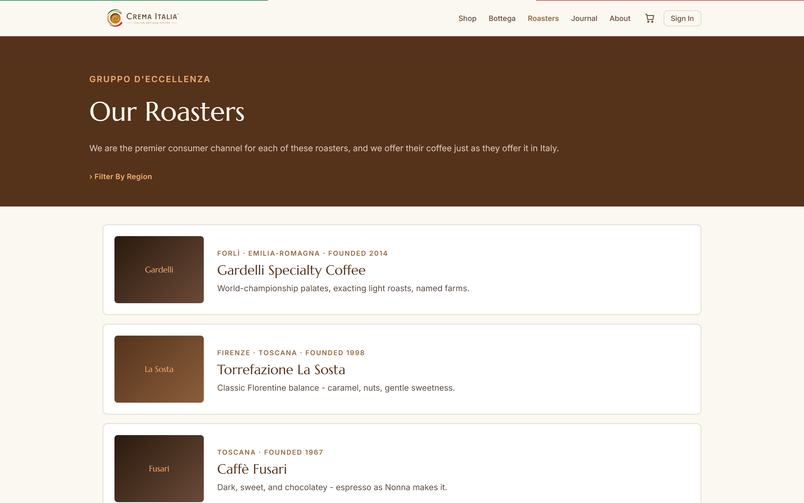

Crema Italia
A Florida importer of whole-bean coffee from a small, named group of artisan Italian roasters, sold direct to American customers exactly as the roaster sealed it. We do not roast, grind, blend or re-bag. The business is pre-launch: the brand, the operating model and a complete working storefront are built; the first roaster contracts and the first real inventory are not.
Prepared 02-SEP-2026 · Crema Italia, LLC, Lutz, Florida, USA · cremaitalia.com
1. The proposition
Americans can already buy Italian coffee. What they cannot easily buy is Italian coffee that is still fresh, and that has not been altered on its way here. Both of those are the whole business:
- Freshness. The large Italian brands sit on a shelf for up to a year. We air-freight, so coffee reaches a customer in weeks rather than months. Coffee that ages past our window comes off sale entirely and is donated rather than discounted indefinitely.
- Unaltered. The coffee ships in the roaster's own sealed valve bag, under the roaster's own name. We are a channel, not a house brand.
- Named and small. A short list of roasters we choose, not an aggregated marketplace. The restraint is the positioning.
- Whole bean only. This deliberately narrows the audience to people who grind at home, which is the customer for whom freshness is worth paying for.
2. How it earns
The catalogue is organised as four "shelves", each with a different commercial job. A fifth, Bottega, carries equipment such as grinders and is never discounted.
| Shelf | What it is | Its job |
|---|---|---|
| Roccia The Rock |
Subscription and larger bag formats, on a 4, 6 or 8 week cadence. | The recurring-revenue core. Free shipping and a subscriber discount. Fully self-service: pause, skip, swap or cancel, no minimum, no cancel fee. |
| Sorpresa The Surprise |
Curated small-format discovery collections, assembled to order. | Customer acquisition and gifting. The intended path into a Roccia subscription. |
| Selezione The Selection |
Premium, seasonal and micro-lot offerings. | Margin and scarcity. Subscribers get early access. |
| Offerta The Offer |
Ageing lots, marked down and sold as-is. | Recovers value from stock approaching the freshness limit, without ever misrepresenting its age. |
Layered on top: a Founding Member tier, capped at 222 subscribers and never reopened, carrying a permanently better rate. It is a durable, account-level status rather than a promotion, and it is designed to be worth more as an honour than as a discount.
We are pre-launch and nobody has yet transacted with us. Every figure - prices, markups, discounts, thresholds, freshness windows - is a working placeholder, good enough to build and reason against and not good enough to charge money against. One deliberate pricing pass happens after the storefront is finished and before it goes public. Until then, changing a number costs only the edit.
3. The operating chain
Roaster in Italy seals whole beans in valve bags, on our order. An Italian freight forwarder consolidates and air-freights to Florida. Stock is received into a US fulfilment facility and shipped to the customer. Crema Italia acts as the US Agent for FDA food-facility registration on behalf of its roaster partners, which is a real service to a small Italian roaster and part of what makes us worth dealing with.
Team
- Steve Roberts - Founder
- Lucia Calò - Operations Manager, Italy. Owns the roaster relationships and the Italian-language documents of record.
- Asia Chirdo - Board Advisor, Italy
- Lauren Roberts - Operations Manager, US
- Plus an Italian freight-forwarding partner.
4. What is built today
Rather more than a deck. The following exist and work:
- A complete, clickable storefront on Shopify, custom-built rather than bought as a theme. Twenty-eight iterations to date, each one reviewed and deployed. It covers the home and founder story, all four shelves, a filterable catalogue, a tasting quiz, roaster profiles, product pages, cart and discount logic, subscription management and account, a regional map of Italian roasting traditions, and the customer promise.
- A finished brand identity - logo by a commissioned artist, palette, typography, and a versioned written Brand Standard the storefront is audited against.
- Three governing written standards - brand, store operating rules (pricing, shelves, discounts, freshness, fulfilment), and a collaboration standard. These are versioned documents, not notes, and the storefront is checked against them.
- Published legal policies - shipping, returns, terms, privacy - live on the domain now.
- Platform risk retired by testing, not by reading. On a separate test store we have run real orders through the subscription engine, the discount engine, product bundling, customer accounts and the product data model. Several assumptions turned out to be wrong, and we found that out for the price of a test order rather than mid-build.
- A live holding page at cremaitalia.com collecting pre-launch signups.




5. What is not built, and what gates a launch
Being straight about this is more useful than a status board that is all green:
- No signed roaster, and no real catalogue. This is the schedule driver, not the software. The entire product data model was designed against invented data, and invented data agrees with whatever you assumed. The first signed roaster and two or three real products are what turn the prototype into a build.
- No photography. The product imagery on screen is a placeholder pattern. This is the single largest remaining gap in how the site presents, and most of it cannot be shot until there is real coffee in real bags.
- No third-party logistics provider selected. Three qualifying questions have to be answered before commercial terms, one of which decides whether a provider can fulfil the Sorpresa shelf at all.
- Pricing not yet validated against real landed cost. The markup model exists and has never been run against an actual invoice, freight bill and duty. It gets tested against the first real products, before any pricing is displayed publicly.
- Launch sequencing. The storefront is deliberately frozen at its current iteration until real products exist, so that work is not done twice.